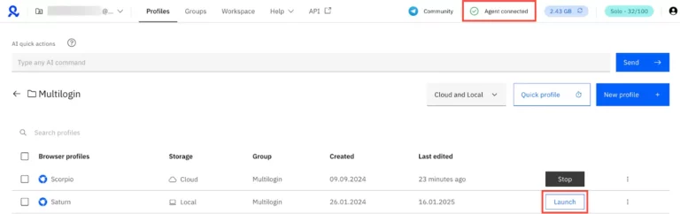

What Multilogin Does Well
Profile isolation, business-tier scaling, template-style workflows, API readiness, and a broader platform narrative that includes cloud phones and browser profiles.
This review is written for buyers who want more than a generic "yes or no." It looks at where Multilogin fits today, which teams benefit most, where the platform earns its premium reputation, and where lower-cost alternatives may still be enough.
Multilogin remains one of the best-known names in the antidetect browser market because it built a reputation around serious browser fingerprinting control, profile isolation, session stability, and operational depth. Over time, the market has become more crowded, with strong competition from GoLogin, AdsPower, Dolphin Anty, Incogniton, Kameleo, and newer challengers.
The latest public materials show a platform that now emphasizes cloud phones and browser profiles in one environment, plus AI quick actions, quick cloning, premium proxy traffic bonuses, automation-friendly API access, and stronger business-tier collaboration features. That is important because it suggests Multilogin is still investing in workflow expansion rather than relying only on brand legacy.

If you need a quick verdict, Multilogin still makes the most sense for buyers who treat multi-accounting as an operational function rather than a side experiment. That includes agencies managing client assets, affiliate teams scaling campaigns, businesses handling many region-specific storefronts, and operators who value automation access and structured profile management.
If you only need a small number of profiles, do not care much about team management, and mainly want a low-cost way to separate sessions, the value equation changes. Competitors can look attractive at the entry level, especially if you are price-sensitive. That does not automatically make Multilogin overpriced. It simply means the platform is strongest when your workflow complexity is high enough to benefit from its extra operational depth.
Profile isolation, business-tier scaling, template-style workflows, API readiness, and a broader platform narrative that includes cloud phones and browser profiles.
Higher pricing than some alternatives, more power than beginners may need, and a steeper justification threshold for small operators with simple setups.
Environments where account bans, cross-linking, workflow speed, or team-scale profile administration carry real business consequences.
The center of the Multilogin value proposition is profile separation. Instead of relying on simple browser containers, the platform is built around isolated browser environments that reduce overlap between accounts.
One of the more meaningful evolutions in public messaging is the combination of cloud mobile and browser profiles inside one pricing structure. That expands the platform narrative and suggests broader device-style management options than many older Multilogin reviews mention.
Official help documentation shows AI quick actions designed to launch profiles, assign proxies, rename assets, and chain tasks through natural language. If your team handles many profile actions daily, small workflow reductions can compound into meaningful time savings.
Multilogin's public pricing makes API access visible even at the trial and Pro levels, while Business plans advertise custom rate limits. This reinforces that the product can fit within automation pipelines rather than existing only as a manual browser dashboard.
Business-tier features like advanced team management, unlimited team seats, proxy templates, profile templates, and bulk-oriented actions show where Multilogin differentiates most clearly.

Buy Multilogin if you operate in a business context where account separation, repeatable profile workflows, and stable team operations are part of revenue generation or operational continuity. Agencies, media buyers, large affiliate teams, e-commerce businesses with many market-specific assets, and automation-focused operators fit this profile well.
Skip Multilogin, or at least compare carefully, if you are just experimenting with multi-account management, only need a handful of profiles, or have a tight budget and minimal need for collaboration features.
| Platform | Public Entry Angle | Best Fit | Why Multilogin Still Wins in Some Cases |
|---|---|---|---|
| Multilogin | Premium cloud phones and browser profiles platform | Serious operators and larger teams | Deeper workflow stack, business features, and stronger premium positioning |
| GoLogin | Accessible pricing and easy starting point | Solo users and small teams | Multilogin may feel better suited to structured scaling |
| Dolphin Anty | Popular in affiliate and media buying circles | Users prioritizing niche community adoption | Multilogin offers broader premium workflow messaging |
| AdsPower | Large profile counts and team-friendly positioning | Businesses wanting broad scale at varied budgets | Multilogin competes through premium fit and current cloud device framing |
A coupon does not change whether a product is the right fit, but it can improve timing. For Multilogin, that matters because buyers often want a reason to reduce trial risk before committing to a premium tool. If you already believe the platform matches your workflow, using coupon AFF5025 at checkout is a sensible step.
For serious multi-account operations, yes, it can still be worth it. The value is stronger when you need workflow depth, automation access, scalable profile management, and business-ready team controls.
The biggest limitation for many buyers is cost. If you only need a very small setup, a cheaper alternative may provide enough value without Multilogin's premium pricing.
Yes. Current Business plan messaging highlights advanced team management, unlimited team seats, and template-based workflows, which are especially relevant for agencies and larger operators.
Read pricing if your main concern is plan cost. Read alternatives if you are still comparing Multilogin against GoLogin, AdsPower, Dolphin Anty, or similar tools.